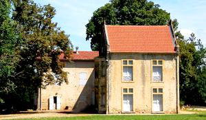
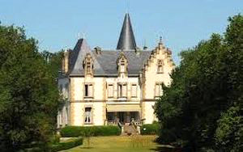
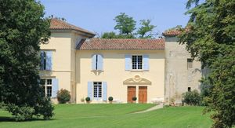

Recensement Jean-Claude Truffet
| Département | 81 — Tarn |
| Canton | Castres |
| Commune | Navés |
| Type d'édifice | Château |
| Période d'origine | XIV-XIX |



Cinq châteaux à Navès dont celui de Navès du XVIIe siècle, de Montespieu (voir artcle), Lostange du XVI-XVIIIe siècle, Donjon de la Tour du XIXe siècle, manoir de Puech_Bertou du XIV-XXe siècles et de Vaudricourt. Pas d'information historique. NAVES, situé sur les bords du Thoré. Depuis le XVIII siècle il est la propriété de la famille Lacger. De nombreux membres de cette famille jouèrent un rôle important dans ladministration de Navès et de la région. En 1275 trois frères, Tourenne, bourgeois de Castres, achètent la seigneurie de Navès. Laîné sinstalle au sud et cest lui qui fait construire le château Tourenne. Les deux autres prirent le nord de la seigneurie avec le château de Navès et Barginac. Démantelé à la fin des guerres de religion le château de Tourenne a été transformé en exploitation agricole. TOUR (la) à NAVES, dit donjon de la tour Léonard au XIIIe siècle, le site apparaît parmi les possessions de l'abbaye de Castres et y demeure sans qu'intervienne un partage jusqu'en 1324. LOSTANGE, construit en 1586 il a appartenu à la famille Lostange-Bécher puis à la famille De Bonne. Il a été fortement remanié au XVIII et XX siècle. Sy trouve actuellement lAPAJH avec lInstitut Médico-Educatif. Aujourd'hui pour colonie de vacances. PUECH-BERTOU, au XVII et XVIII siècle il était la résidence de la famille De Falc magistrats et gens de guerre, à cette époque le fief comprenait également Blima. Il fut racheté au XIX siècle par le petit séminaire de Castres qui le revendit en 1840 à la famille Dougados-Calhire.
Navès . Cétait un fort de première importance. Au Moyen Age son rôle stratégique était indéniable car il contrôlait le franchissement, autant par le pont que par les gués, du Thoré. Le château actuel daterait du XVII siècle, Des bâtiments de la « Métairie de Navès » située tout proche seraient ceux de léglise de lancien prieuré bénédictin datant également de cette période. Donjon de la Tour Léonard.
LA TOUR, les restes dune dizaine de mètres de haut dune tour imposante avec des murs de 1 m 50 dépaisseur. Sa construction remonte au XI ou XII siècle. Elle aurait servi de tour à signaux depuis les guerres de religion et plus tard avec sa plate-forme à plus de 15 mètres de hauteur elle aurait fait partie du système de défense du château de La TOUR. Au premier étage, côté sud, une fenêtre en croisée laisserait à penser, quà une certaine époque, elle ait pu servir dhabitation. La construction de cette Tour s'inscrit dans le mouvement de fortification qu'à connu le Pays Castrais à la suite de l'expédition du prince de Galles, et se poursuivant durant la guerre de Cent Ans. Le système de défense présente des meurtrières, ne possédant pas de chambre de tir, et permettant une efficace défense par tir croisé. La Tour aurait donc bien été réaménagée aux alentours de 1600. Puech-Bertou, cette ferme est un ancien manoir dont lépaisseur des murailles laisse supposer quil a pu jouer dans le passé un rôle défensif, possède une grosse circulaire tour abritant un bel escalier en vis. Vaudricourt, corps de logis en équerre à deux niveaux avec pavillon en angles et lucarnes sur toit brisé e ardoise, tour ronde à toit en poivrières sur l'arrière du Bâtiment.
Famille Lacger Famille Dougados-Calhire
"
Château de Navés, de Lostange, de la Tour et de Puech Berthou.